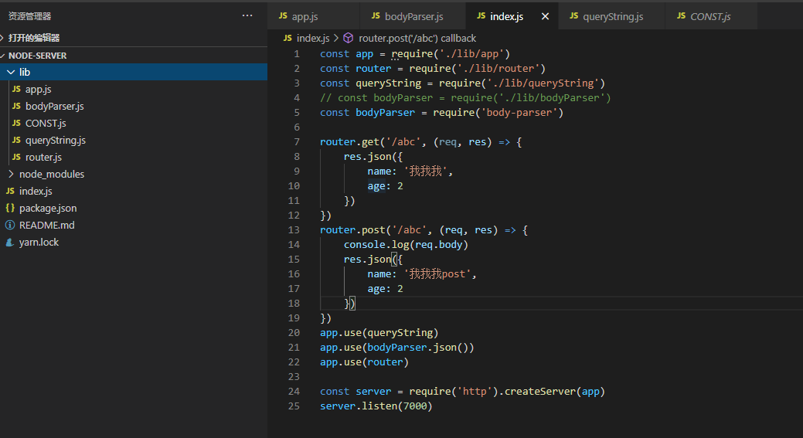
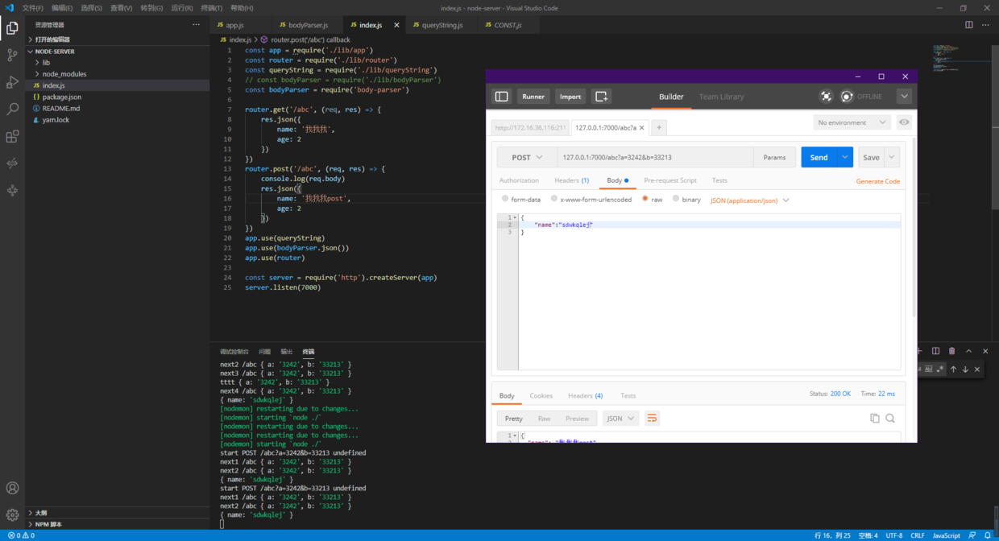

nodejs手写一个httpserver(一、app/router对象)
先参考（抄袭）一下express的api
app.use(...);
router.get(url,...)
router.post(url,...)
对比原生的node http模块，express这些API非常好用了，并且use方法，可以把功能代码拆分出来，比如body-parser router 都是拆成中间件的形式，完成自己的功能的
试着手写一个server实现这些功能，开发一个能用一些实用的API的server，而不是原生NodeAPI

app
app是传入HTTP.createServer的handeler，那它肯定是这样一个函数
const app = (req, res) => {
...
}
用于执行use注册的中间件，把url分发给router路由（其实这是router该干的事，app只处理use的中间件）
实现app.use
用中间件的时候，中间件中都有3个参数，req,res,next，前两个简单，从app作用域就能拿到，那么next()调用呢，next调用时，也有3个参数，reqresnext，其中next是下一环节的中间件。 想了半天，给注册的中间件数组们一个排序，创建了一个next方法按序调用。。。（应该不太对，不过实现了）
const app = (req, res) => {
// json api
res.json = json
console.log('start', req.method, req.url, req.query)
// 反着给他们帮定next参数
function next(index) {
console.log('next' + index, req.url, req.query)
app.actions[index].call(this, req, res, next.bind(this, index + 1))
}
app.actions[0](req, res, next.bind(this, 1));
}
app.actions = []
// 实现注册中间件
app.use = (handler) => {
app.actions.push(handler)
}
module.exports = app
// json
function json(object) {
this.writeHeader(200, { 'Content-Type': 'application/json;charset=UTF-8' })
this.write(JSON.stringify(object))
this.end()
}
router
router的功能是用来分发url给 router.get 或 router.post 注册的handler 那简单，用if判断一下就好了
const router = (req, res, next) => {
const { method, url } = req
if (method === 'GET') {
router.getRoutes[url](req, res, next)
} else if (method === 'POST') {
router.postRoutes[url](req, res, next)
}
}
router.getRoutes = {}
router.postRoutes = {}
router.get = (path, handler) => {
router.getRoutes[path] = handler
}
router.post = (path, handler) => {
router.postRoutes[path] = handler
}
module.exports = router
中间件
写好了app.use,就可以疯狂的以中间件的形式写server的功能了
queryString
原始的message.url 是带着参数的，要在这个环节给拆出来，用正则表达式替换就可以了
let { REG_URL } = require('./CONST') ///(?!=\?)(\/.+)\?(.+)/
// 处理querystring中的参数
module.exports = function (req, res, next) {
const url = req.url.replace(REG_URL, '$1')
const querys = req.url.replace(REG_URL, '$2').split('&')
const query = {}
querys.forEach(item => {
const [key, value] = item.split('=')
query[key] = value
})
req.url = url
req.query = query
next()
}
body-parser
body-parser太难写了，看了半天api文档也没明白咋取，知道的朋友给我留言，谢谢你们了。 好在写了app.use,直接use第三方的body-parser模块就可以实现了。

还行，第三方模块可以用，最基本的流程跑通了over 没处理报错